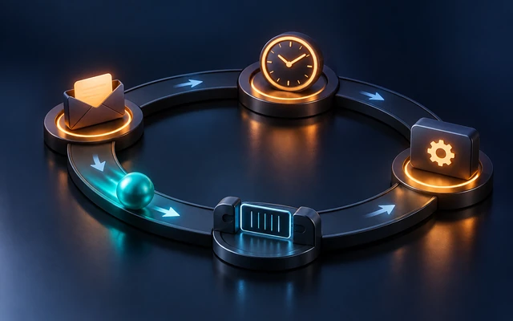

Why does a Timer stop firing while you scroll? Why does a timer created on a background thread never fire at all? Why does a change to a view appear on screen only after your function returns, and why does long work on the main thread freeze the UI? All of these lead to the same place: the run loop, the event-processing loop at the heart of every Apple app. You rarely touch it directly, but understanding it explains a lot of everyday behavior.

RunLoop Explained for Swift Developers
What a run loop is
A run loop is a loop that a thread runs to wait for events and handle them. In pseudocode:
// while appIsRunning {
// let event = sleepUntilSomethingHappens() // the thread uses no CPU while waiting
// handle(event) // a touch, a timer, a port message, ...
// }
The key word is sleeps. A thread whose run loop is idle uses no CPU at all: it’s parked in the kernel, waiting on a set of ports. It wakes up when something arrives: a touch event from the system, a timer reaching its fire date, a message from another thread, a block dispatched to the main queue.
Each thread has at most one run loop, created lazily the first time you ask for it with RunLoop.current (Foundation) or CFRunLoopGetCurrent() (Core Foundation, the layer underneath). The main thread’s run loop is started for you by UIApplicationMain (or NSApplicationMain), and it’s what keeps your app alive and responsive. When it isn’t running your code, it’s sleeping, waiting for the next event.
What a run loop handles
A run loop monitors three kinds of things:
- Input sources, which deliver asynchronous events: port-based sources (messages from the kernel and other threads, including system events like touches) and custom sources (signaled manually by your code).
- Timers, which fire at specific times:
Timer(NSTimer) instances scheduled on the run loop. - Observers, which are called at specific points of each loop iteration.
If a run loop has no sources and no timers, running it returns immediately: there’s nothing to wait for.
One iteration, observed
You can attach an observer and watch the run loop work. This command-line example schedules a timer, runs the current thread’s run loop for a moment, and logs every phase:
import Foundation
var phases: [String] = []
let observer = CFRunLoopObserverCreateWithHandler(nil, CFRunLoopActivity.allActivities.rawValue, true, 0) { _, activity in
switch activity {
case .entry: phases.append("entry")
case .beforeTimers: phases.append("beforeTimers")
case .beforeSources: phases.append("beforeSources")
case .beforeWaiting: phases.append("beforeWaiting")
case .afterWaiting: phases.append("afterWaiting")
case .exit: phases.append("exit")
default: break
}
}
CFRunLoopAddObserver(CFRunLoopGetCurrent(), observer, .defaultMode)
let oneShot = Timer(timeInterval: 0.05, repeats: false) { _ in phases.append("TIMER FIRED") }
RunLoop.current.add(oneShot, forMode: .default)
RunLoop.current.run(mode: .default, before: Date().addingTimeInterval(0.2))
print(phases.joined(separator: " → "))
// entry → beforeTimers → beforeSources → beforeWaiting → afterWaiting → TIMER FIRED
// → beforeTimers → beforeSources → beforeWaiting → afterWaiting → exit
Each iteration: check timers, process sources, and if nothing is pending, go to sleep (beforeWaiting), until a timer or source wakes it (afterWaiting) and the cycle repeats. When the deadline passes, the loop exits.
Why UI changes appear “later”
The beforeWaiting phase is where a lot of UIKit magic happens. When you change a view’s frame or text, UIKit doesn’t redraw immediately. It marks the view as needing layout or display, and Core Animation registers a run loop observer that commits all pending changes in one batch when the main run loop is about to go to sleep. That’s why:
- many changes in the same function produce one redraw,
- changes appear only after your code returns to the run loop,
- a long synchronous task on the main thread freezes the screen: the run loop can’t reach
beforeWaiting, so nothing is committed, and no new touches are processed either.
Each main run loop iteration is also wrapped in an autorelease pool, which is drained at the end of the iteration. That’s where autoreleased Objective-C objects created by your event handling are finally released.
Run loop modes
A run loop always runs in a mode, and in that mode it only handles the sources, timers, and observers registered for that mode. Modes are how the system prioritizes work:
| Mode | When it’s used |
|---|---|
.default |
normal operation |
.tracking (UIKit) |
while the user is dragging or scrolling a scroll view |
.common |
a set of modes (default and tracking); registering for .common means “all common modes” |
This explains the classic scrolling bug. Timer.scheduledTimer(…) adds the timer in .default mode. While a scroll view is being dragged, UIKit switches the main run loop to tracking mode to keep scrolling smooth, so default-mode timers are paused until the finger lifts. The fix is to register the timer for .common:
let countdown = Timer(timeInterval: 1.0, repeats: true) { _ in
print("Tick")
}
RunLoop.main.add(countdown, forMode: .common) // keeps firing during scrolling
countdown.invalidate()
Timers in practice
- A repeating timer is retained by the run loop, and it retains its target or block. It keeps firing, and keeps its target alive, until you call
invalidate(). - Timers aren’t precise. A timer fires at the first run loop iteration after its fire date. If the thread is busy, it fires late; a repeating timer that misses several intervals fires once, not several times.
- Tolerance saves energy. Setting
timer.tolerance(for example to 10% of the interval) lets the system coalesce timers and wake the CPU less often:
let refresh = Timer(timeInterval: 60, repeats: true) { _ in }
refresh.tolerance = 6
print(refresh.tolerance) // 6.0
refresh.invalidate()
Why background timers don’t fire
DispatchQueue.global().async {
Timer.scheduledTimer(withTimeInterval: 1, repeats: true) { _ in
print("Never printed")
}
}
The timer is scheduled on the background thread’s run loop, but nobody runs that run loop. GCD’s worker threads don’t run their run loops, and the thread goes back to the pool as soon as the block returns. Options:
- schedule the timer on the main run loop, if the work is light,
- use a
DispatchSourceTimer, which is driven by GCD and doesn’t need a run loop, - in async code, loop with
try await Task.sleep(for:)(Swift 5.7).
let source = DispatchSource.makeTimerSource(queue: .global())
source.schedule(deadline: .now(), repeating: 1.0, leeway: .milliseconds(100))
source.setEventHandler {
print("Tick from a dispatch timer")
}
source.resume()
source.cancel()
Running a run loop yourself
Occasionally, in command-line tools, tests, or legacy APIs that require a thread with a running run loop, you need to spin one manually:
var finished = false
DispatchQueue.main.asyncAfter(deadline: .now() + 0.2) {
finished = true
}
while !finished {
RunLoop.current.run(mode: .default, before: Date().addingTimeInterval(0.05))
}
print("Done")
Each run(mode:before:) call processes events until the date passes or a source fires. This works here because blocks dispatched to the main queue are delivered through the main run loop: the main queue is drained by the main thread’s run loop, which is how GCD and run loops cooperate on the main thread.
In apps, you almost never need this, because the system runs the main run loop for you. If you find yourself spinning a run loop to “wait” for something on the main thread, restructure the code with a completion handler or async/await instead.
RunLoop and Swift concurrency
Swift concurrency doesn’t use run loops for scheduling: tasks run on a cooperative thread pool. Work isolated to the @MainActor is enqueued onto the main queue, which the main run loop drains, so main-actor code still runs within main run loop iterations, and still benefits from the same batching of UI updates.
You’ll keep meeting run loops when using Timer, Combine’s RunLoop scheduler (receive(on: RunLoop.main), which behaves differently from DispatchQueue.main during scrolling because of modes), perform(_:with:afterDelay:), and some Core Foundation and networking APIs.
Interview questions
Why does a Timer pause while a scroll view is scrolling?
scheduledTimer registers it in the default mode, and the main run loop runs in tracking mode during scrolling. Add the timer for .common modes.
Why doesn’t a Timer scheduled from DispatchQueue.global().async fire?
It’s scheduled on a background thread’s run loop that nobody runs. Use the main run loop, a DispatchSourceTimer, or Task.sleep.
When does UIKit actually redraw after you change a view? Core Animation commits pending changes in a run loop observer, before the main run loop goes to sleep, after your code returns.
Does an idle run loop use CPU? No. It sleeps in the kernel until a port message or timer wakes it.
Summary
- A run loop sleeps a thread until input sources or timers need attention, then handles them, calling observers at each phase.
- The main run loop starts automatically; background threads’ run loops only run if someone runs them.
- Core Animation commits UI changes before the main run loop sleeps, so long main-thread work freezes the screen.
- Modes decide what’s handled; add timers to
.commonto keep them firing while scrolling. - Prefer
DispatchSourceTimerorTask.sleepfor background timing, and keep the main run loop free for UI work.